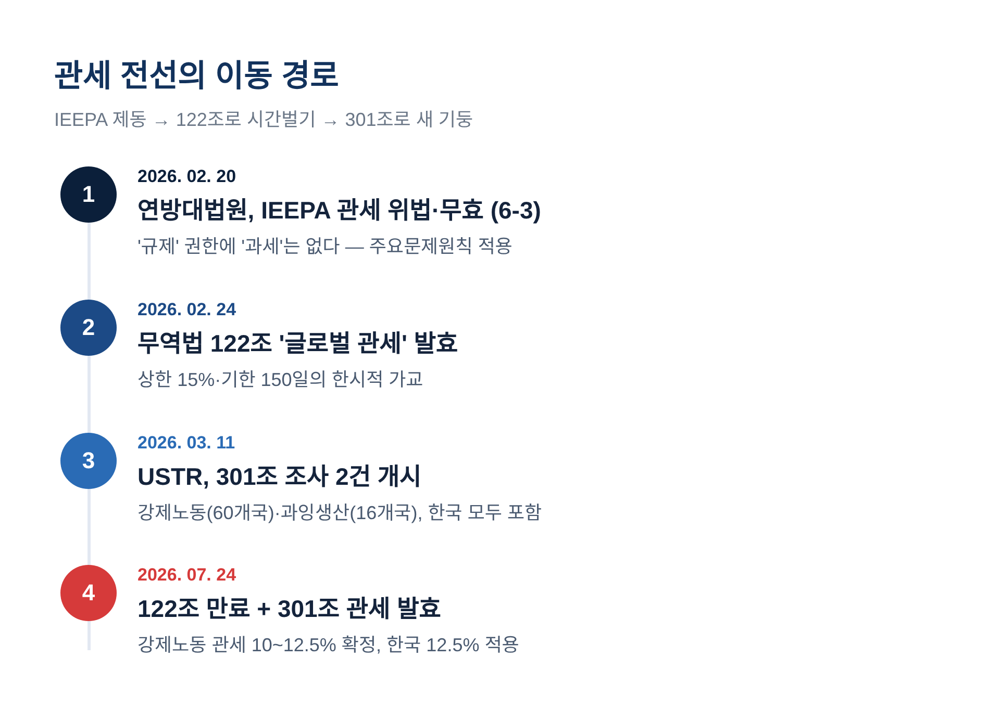
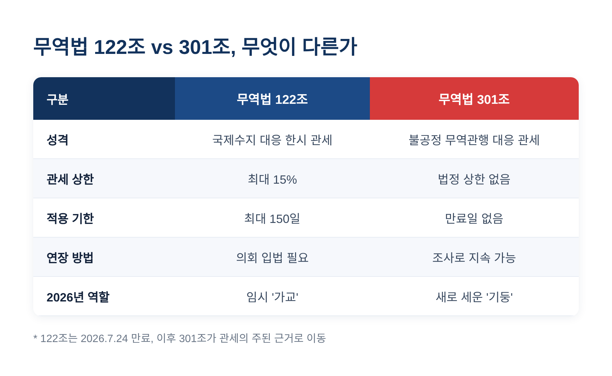
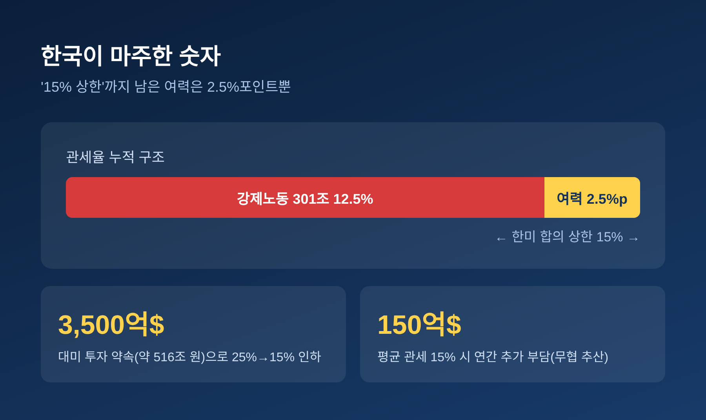
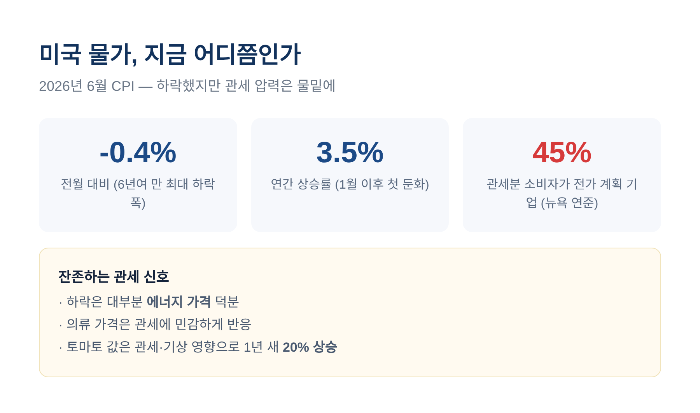
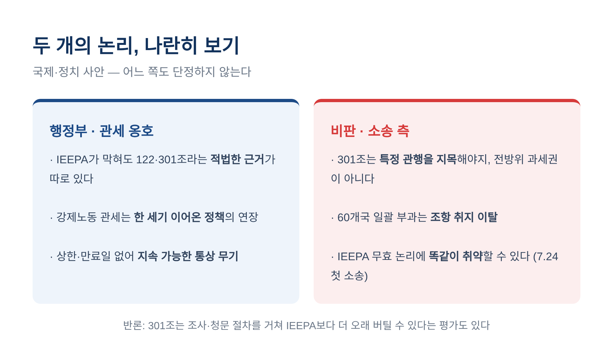

트럼프 관세, 법원 제동에도 301조 우회 — 한국 통상 영향까지 정리

이번 글에서는 트럼프 행정부의 관세 정책이 왜 다시 논란이 되는지 정리해 보겠습니다. 초점은 관세율 숫자가 아니라, "대통령이 어떤 법으로 관세를 물릴 수 있느냐"는 법적 근거 다툼입니다. 미국 안의 판결과 우회, 그리고 그 파장이 한국 수출에 어떻게 닿는지를 차분히 짚어 보려 합니다.
먼저, 무슨 일이 있었나
시작은 미국 법원이었습니다.
트럼프 행정부는 2기 초부터 국제비상경제권한법, 줄여서 IEEPA를 근거로 광범위한 '비상권한 관세'를 매겨 왔습니다. 이른바 상호관세입니다.
그런데 2026년 2월 20일, 미국 연방대법원이 6대 3으로 제동을 걸었습니다. 이 관세가 위법하고 무효라는 판단이었습니다. 사건 이름은 '러닝 리소시스 대 트럼프'이고, 판결문은 로버츠 대법원장이 직접 썼습니다.
흥미로운 점은 그다음입니다. 트럼프 대통령은 판결이 나온 바로 그날, 다른 법을 꺼내 들었습니다. 1974년 무역법 122조를 근거로 한 '글로벌 관세'를 즉시 발표한 것입니다. 동시에 무역법 301조 조사도 예고했습니다.
관세를 접은 게 아니라, 근거 법률을 갈아탄 셈입니다.

핵심은 '관세율'이 아니라 '법적 근거'
이 대목을 오해하기 쉽습니다.
법원이 문제 삼은 것은 관세 자체가 아니었습니다. 관세를 매긴 '근거 법률'이 부적절하다는 것이었습니다.
대법원의 논리는 이렇습니다. IEEPA가 대통령에게 준 것은 '규제할' 권한이지 '과세할' 권한이 아니라는 것입니다. 관세는 헌법상 의회의 권한인데, IEEPA는 그 권한을 대통령에게 명확히 넘겨준 적이 없다고 봤습니다.
여기에 '주요문제원칙'이 더해졌습니다. 경제적·정치적으로 막대한 의미를 갖는 권한이라면, 의회의 분명한 수권이 있어야 한다는 원칙입니다.
대법원은 한 가지를 특히 짚었습니다. "IEEPA가 반세기 존재하는 동안, 어떤 대통령도 이를 근거로 관세를 매긴 적이 없다"는 사실이었습니다.
전례가 없다는 것. 그 자체가 권한의 한계를 보여준다는 판단이었습니다.
그러니 행정부의 대응도 자연스러웠습니다. 관세를 포기하는 대신, 더 튼튼한 법적 기둥을 찾아 옮겨 세우는 길을 택한 것입니다.
두 개의 우회로 — 122조와 301조
우회로는 두 갈래였습니다. 성격이 꽤 다릅니다.
먼저 무역법 122조입니다. 국제수지 문제에 대응해 대통령이 관세를 매길 수 있는 조항입니다. 다만 조건이 붙습니다. 상한은 15%, 기간은 최대 150일. 그 이상은 의회 입법이 있어야 하고, 대통령 혼자 연장할 수 없습니다.
이 관세는 2026년 2월 24일 발효해, 150일 뒤인 7월 24일 자동으로 만료됐습니다. IEEPA가 무너진 자리를 임시로 메운 '가교'였던 셈입니다.
다음이 무역법 301조입니다. 불공정 무역 관행에 대응하는 조항으로, 조사와 판정을 거쳐 관세를 매깁니다. 122조와 결정적으로 다른 점은 두 가지입니다. 법으로 정한 상한이 없고, 만료일도 없습니다.
행정부 입장에서는 오래 끌고 갈 수 있는 틀입니다. 122조가 임시 다리였다면, 301조는 새로 박는 기둥에 가깝습니다.
USTR은 2026년 3월, 두 갈래 301조 조사를 열었습니다. 하나는 60개 경제권을 겨눈 '강제노동' 조사, 다른 하나는 16개 경제권을 겨눈 '과잉생산' 조사였습니다. 한국은 양쪽 모두에 이름을 올렸습니다.
그리고 122조가 만료된 7월 24일, USTR은 강제노동 관세를 확정해 발효했습니다. 60개국에 10%에서 12.5%까지입니다.

한국에 떨어진 숫자 — 12.5%와 남은 2.5%p
이제 우리 이야기입니다.
한국에 적용된 강제노동 301조 관세율은 12.5%입니다. 최혜국대우 관세를 포함한 수준으로, 일본·스위스도 비슷합니다.
문제는 여기서 끝이 아니라는 점입니다.
배경을 잠깐 짚겠습니다. 한국은 지난해 7월, 3,500억 달러 규모의 대미 투자를 약속하는 대가로 상호관세를 25%에서 15%로 낮췄습니다. 약 516조 원짜리 카드로 얻어낸 '15% 상한'이었습니다.
그런데 강제노동 관세로 이미 12.5%가 붙었습니다. 15%까지 남은 여력은 사실상 2.5%포인트뿐입니다. 아직 결과가 나오지 않은 과잉생산 관세가 이 좁은 틈을 넘어서면, 합의가 흔들릴 수 있습니다.
정부도 바쁘게 움직였습니다. 김정관 산업통상부 장관과 여한구 통상교섭본부장이 미국을 긴급 방문해 고위급 회담을 이어갔습니다. 정부는 "미측이 15% 상한 준수 입장을 재확인했다"고 전했습니다.
부담의 크기도 가늠해 볼 만합니다. 한국무역협회 국제무역통상연구원은 평균 관세율이 15%만 되어도 연간 약 150억 달러의 추가 관세 부담이 생긴다고 추산했습니다.

물가는 어떻게 움직이고 있나
관세가 오르면 미국 소비자물가는 어떻게 될까요.
2026년 6월 소비자물가지수는 전월 대비 0.4% 내렸습니다. 6년여 만의 최대 하락폭입니다. 연간 상승률도 3.5%로 둔화했습니다.
다만 이 하락은 대부분 에너지 가격 덕이었습니다. 관세 압력은 다른 자리에 잠복해 있습니다. 의류 가격은 관세에 민감하게 반응했고, 토마토 값은 관세와 날씨 탓에 1년 새 20% 올랐습니다.
특히 눈여겨볼 조사가 있습니다. 뉴욕 연준에 따르면, 기업의 약 45%가 여전히 관세 인상분을 소비자가격에 넘길 계획이라고 답했습니다.
지금 당장 물가가 폭발한 것은 아닙니다. 그러나 전가 압력은 아직 물밑에 있습니다.

양측의 논리 — 어느 쪽도 단정하지 않기
국제·정치가 얽힌 사안입니다. 한쪽 손을 들어주기보다, 두 주장을 나란히 두는 편이 정직합니다.
행정부의 논리는 이렇습니다. IEEPA가 막혔더라도, 의회가 명시적으로 위임한 122조와 301조라는 적법한 근거가 따로 있다는 것입니다. 특히 강제노동 관세는 한 세기 가까이 이어온 미국의 오랜 정책이라고 강조합니다. USTR 대표 제이미슨 그리어는 "교역 상대국도 이제 강제노동 수입을 차단할 때가 한참 지났다"고 말했습니다.
반대편의 논리도 만만치 않습니다. 관세에 맞선 소송은 "301조는 특정 나라의 특정 관행을 지목해 판정하도록 요구하는 조항이지, 전 세계 거의 모든 수입품에 세금을 매기는 자유재량 권한이 아니다"라고 주장합니다. 60개국을 한꺼번에 때린 방식이 조항의 취지를 벗어났다는 것입니다. 일부 법학자는 이 방식이 IEEPA 관세를 무너뜨린 논리에 똑같이 취약하다고 봅니다. 실제로 7월 24일, 첫 소송이 곧바로 제기됐습니다.
물론 반론도 있습니다. 301조는 실제 조사와 청문 절차를 거치는 만큼, IEEPA보다 법정에서 더 오래 버틸 수 있다는 평가입니다.
어느 쪽이 맞을지는 다시 법원의 몫으로 넘어갔습니다.

정리하면 이렇습니다.
이번 관세 전선의 진짜 승부처는 관세율이 아니라, 그 관세를 떠받치는 법적 근거였습니다. 법원이 IEEPA라는 기둥을 뽑자, 행정부는 122조로 시간을 벌고 301조로 새 기둥을 세웠습니다. 그 사이 한국은 12.5%라는 숫자와, 15% 상한까지 남은 2.5%포인트의 좁은 틈을 마주하고 있습니다.
과잉생산 조사의 결과와 새 소송의 향방. 이 두 가지가 다음 국면을 가를 것입니다. 그 답이 나올 때까지, 통상 당국의 시간은 꽤 촘촘하게 흘러갈 것입니다.